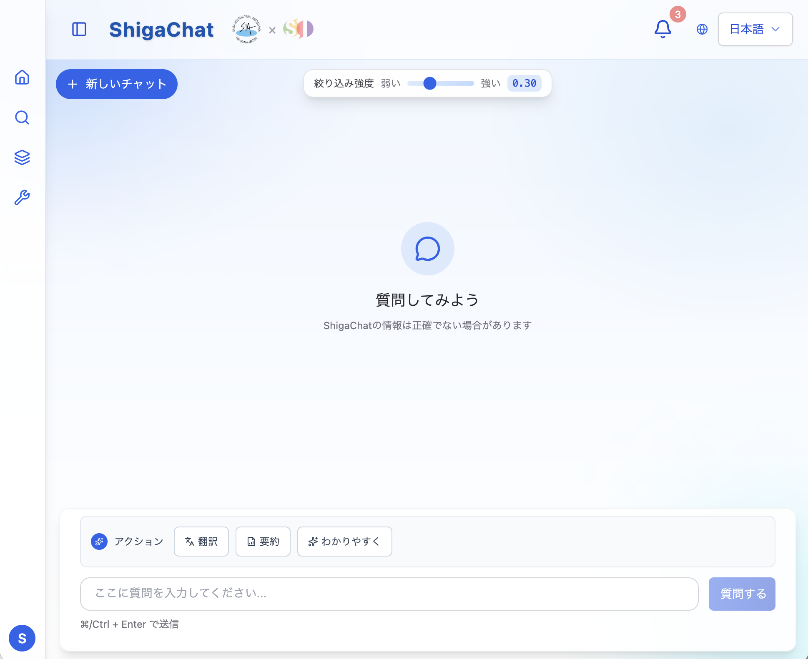
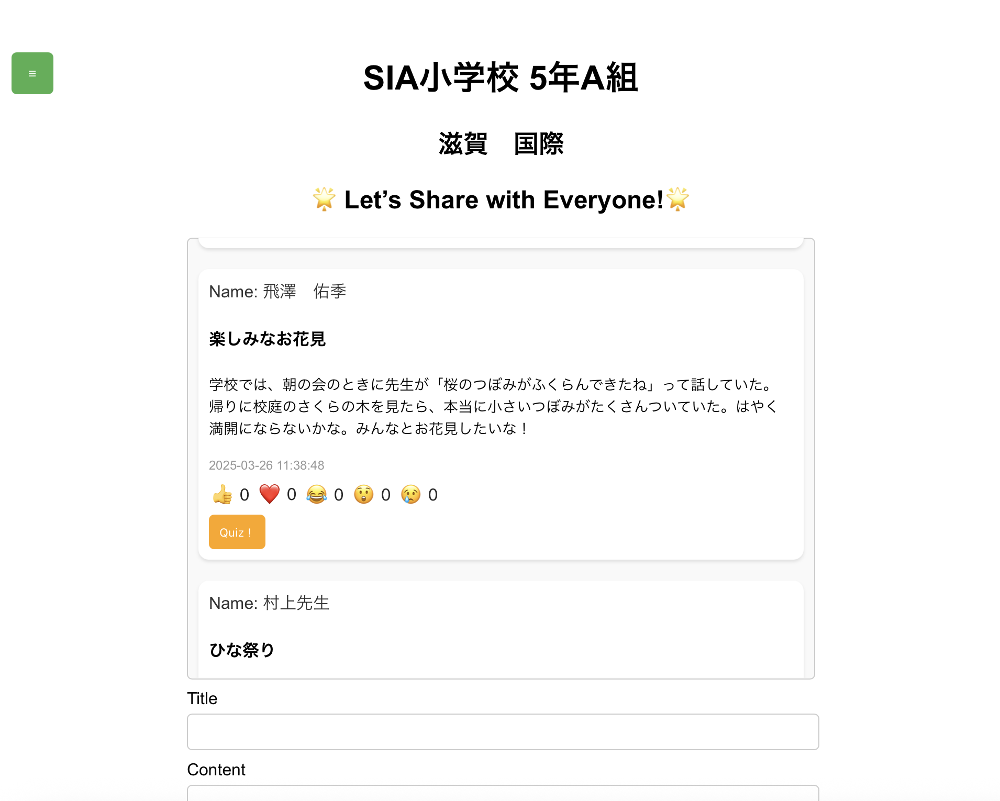

Profile
経歴
- 2022 – 2026立命館大学 情報理工学部
- 2026 –立命館大学大学院 情報理工学研究科
自己紹介
北海道出身で、高校時代はラグビー部に所属していました。大学ではサービスコンピューティングの分野で研究を行っています。学外ではAI受託開発企業にて長期インターンに取り組んでいます。
趣味は筋トレと旅行で、ご飯を食べるのも好きです！
Research
概要
自然言語要件から複合サービスを構成するAPI選択は，サービス自動合成の重要課題である．既存のLLM単一エージェント手法は，API数増加に伴うプロンプト長の線形増大により，コンテキスト長制限や推論精度低下のスケーラビリティ問題を抱える．本論文では，各APIの仕様を個別のコントラクタエージェントに分散保持させ，契約ネットプロトコル（CNP）に基づく入札により推薦を行うマルチエージェント型手法を提案する．さらに，コア機能分解・カテゴリマッピング・APIマッチング・API選択の推論過程を個別タスクとして外在化し，その分担方式（マネージャ主導型・コントラクタ主導型・協調型）が推薦性能に与える影響を比較する．ProgrammableWebデータセットによる評価の結果，マネージャ主導方式が最も安定的に高精度を示し，推論タスクの分担設計が精度とコストのバランスを決定することを明らかにした．
Work
ShigaChat
Team Project 滋賀国際協会にて運用中
Shiga Chatは、滋賀国際協会の職員を対象とした多言語対応の限定公開Q&Aサービスです。
研究室内の活動の一環で開発されました。活動終了後でも運用に至るまで実装をし、実際に滋賀国際協会内で運用中です。
ChatGPTと検索拡張生成（RAG）を組み合わせることで、日常生活に関する質問に対して、迅速かつ地域特化の回答を提供します。 ユーザの質問に対し、RAGは関連する既存のQ&Aデータベースを検索・参照し、ChatGPTにテキストを渡します。渡されたテキストをChatGPTが自然な形で回答生成し、ユーザに返します。
こだわった点
- ユーザ体験の向上：質問の投稿から回答までの流れを直感的に設計。画面遷移や操作性に配慮し、初めて使う外国人ユーザでも使いやすいUIを意識。
- 情報の正確性と安全性：ChatGPTの誤回答（ハルシネーション）を防ぐため、回答の元となるQ&Aデータベースを構築。また、人手による内容チェック、多言語対応の文法チェックを導入。
- 多言語対応：通知や検索などの基本操作が全対応言語で可能なように設計し、多文化に配慮。
参照Q&Aデータ
公益財団法人滋賀県国際協会 生活相談Q&A
Diary Board
Team Project
Diary Boardは、非自発的に来日した外国人児童が、日本の学校現場で孤立しないように設計された多言語対応の教育支援ツールです。
研究室内の活動の一環で滋賀国際協会へ訪問し、課題をヒアリングする中でこのシステムを開発しました。
日記を通じて外国人児童の過ごす多文化を知り、文化的背景や言語の違いによる障壁を取り除きます。そして児童同士の交流を促進することで、包摂的な学級づくりを支援します。
こだわった点
- 継続利用の促進：日記を継続的に書いてもらうために、ランキング機能や称号機能を実装。
- 多言語学習支援：日記の内容に関するクイズ機能を追加し、楽しみながら言語学習できる仕組みを提供。
長期インターン
Internship 2025年4月 - 現在担当領域
バックエンド・フロントエンド・インフラの設計から実装まで一貫して担当。
商談内でデモを作成・実演し、技術的な価値を顧客に直接提案。
候補者の技術選考・面談を担当。
開発実績
AIによる事務作業の完全自動化
AIエージェントにRAG・OCR・Embeddingを組み合わせ、伝票処理やDB登録などの事務作業を完全自動化。表記揺れやイレギュラーも人間のように判断可能に。
社内情報のAI検索システム
部署横断でAIが社内文書を検索し、自然言語の質問にも対応。ベテラン依存のナレッジ共有を自動化し、検索時間を大幅に削減。
AI×OCRによる書類の自動データ化
OCR抽出文字をAIが文脈理解し、表記のばらつきや不定形書式にも対応。伝票・書類の自動処理からDB登録までを一括自動化。
需要予測
小売チェーン、食品卸、産業機器部品メーカーなどを対象に、販売数・出荷量などの時系列データに加え、天候、気温、曜日・祝日、販促施策、地域イベントといった外部要因も用いた需要予測モデルを構築。